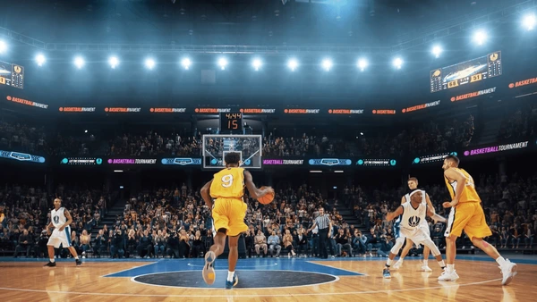

Lomba bola basket
Basket
Lomba basket antar jurusan Polibatam ini jadi ajang paling ditunggu tiap tahunnya buat nunjukin siapa yang paling solid dan kompak di lapangan! Nggak cuma soal ngejar poin dan nge-dunk kece, tapi juga soal kerja sama, strategi, dan kekompakan tim dari awal sampai peluit akhir. Suasana pertandingan dijamin seru banget — teriakan supporter, dentuman bola ke lantai, dan semangat juang dari tiap pemain bikin atmosfer lapangan makin panas! Tiap jurusan wajib punya tim terbaiknya, dan siapa pun bisa jadi bintang kalau punya mental kuat dan kerja sama yang solid. Event ini juga bukan cuma tentang menang atau kalah, tapi soal kebersamaan, sportivitas, dan gimana caranya bisa nunjukin semangat mahasiswa Polibatam yang nggak gampang nyerah. Jadi, siapin jersey terbaikmu, latih dribble dan shooting-mu, karena di sinilah tempat buat buktiin skill-mu di lapangan basket Polibatam! 🏀🔥
Tujuan
Meningkatkan semangat sportivitas dan kerja sama tim antar mahasiswa. Melatih fokus, strategi, dan ketahanan fisik lewat permainan kompetitif. Membangun solidaritas antar jurusan lewat kompetisi yang positif dan menyenangkan. Menjadi ajang menyalurkan hobi dan bakat di bidang olahraga basket.
Aturan Permainan
- Jumlah Pemain: Setiap tim terdiri dari 5 pemain inti dan maksimal 5 pemain cadangan. Minimal 3 pemain harus ada di lapangan untuk melanjutkan pertandingan.
- Durasi Pertandingan: Pertandingan berlangsung 4 babak × 10 menit waktu kotor. Istirahat antar babak selama 2 menit, dan 5 menit di antara babak kedua dan ketiga.
- Pergantian Pemain: Pergantian pemain bisa dilakukan kapan saja saat bola mati dengan izin wasit.
- Pelanggaran (Foul): Setiap pemain hanya boleh melakukan 5 pelanggaran pribadi. Setelah tim melakukan 5 pelanggaran dalam satu babak, tim lawan mendapatkan free throw.
- Three-Point Line: Poin dihitung 3 jika bola masuk dari luar garis 3 poin, 2 poin dari dalam area, dan free throw bernilai 1 poin.
- Waktu Serangan (Shot Clock): Setiap tim punya waktu 24 detik buat nyerang dan melakukan tembakan. Kalau bola nggak kena ring dalam waktu itu, bola beralih ke lawan.
- Overtime: Kalau skor seri di akhir pertandingan, akan ada perpanjangan waktu 5 menit.
- Fair Play: Dilarang melakukan provokasi, adu mulut, atau tindakan kasar. Pemain wajib menghormati keputusan wasit.
- Perlengkapan Wajib: Semua pemain harus memakai jersey bernomor, sepatu basket, dan pelindung lutut (opsional).
- Penentuan Pemenang: Pemenang ditentukan dari skor tertinggi di akhir pertandingan atau perpanjangan waktu.
Jadwal Pelaksanaan
13 Desember 2025, Lapangan Basket Polibatam
Kontak Panitia
📞 0878-1355-90178 (Amadeo Duscha Roberd)